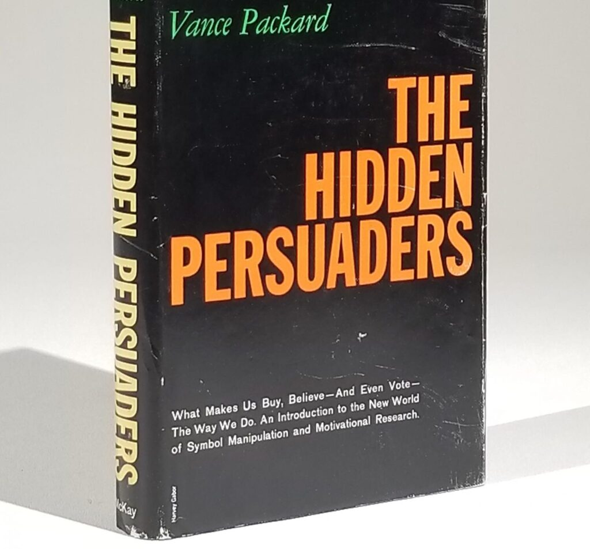

The twin threats of "hidden persuasion" and artificial intelligence have now convinced most of us that Google and its ilk are almost uniquely powerful. These threats are overrated. The digital giants can do less than we fear – and we risk regulating them where we should not.1

Imagine for a moment that a writer grabs the public’s imagination by arguing the marketing industry is composed of well-informed tricksters. This writer believes that marketers use modern psychological insights to manipulate citizens without their knowledge. In effect, he says, marketers are misleading people into buying products and services. His book sells more than a million copies.
Imagine, too, that a group of psychologists, engineers and mathematicians gather to explore the future of artificial intelligence (AI). They are confident that AI can let computers form concepts, solve the kinds of problems that humans solve, and improve their own programs. They start with an attempt to better translate languages. Their vision stretches far beyond that, to computers that can form their own concepts and improve their own reasoning.
All this indeed happened. But the year in which it happened was 1956.
Indeed, these two big ideas of 1956 have arguably had outsized effects on how we see the controversies of 2021, almost two-thirds of a century later. Most of the people alive today in the western world grew up with these views in the air, and rarely saw them contradicted. In particular, it seems likely that these ideas have shaped how we see one of the biggest industries in today's world – online advertising.
And yet in the more than six decades since 1956, the leading thinkers in both psychology and AI have quietly but thoroughly reshaped their ideas about the workings of their fields. While those two big ideas have settled into the public’s consciousness, experts have quietly disowned them.
Could it be that the public understanding of much online advertising and its effects is simply wrong?
If so, the current noisy debate about the future of Google, Facebook and their fellow digital giants is likely built on shaky foundations.
The Hidden Persuaders ...
The Hidden Persuaders, Vance Packard's book about marketing, became a publishing hit in 1957, just as US households' TV ownership was swelling. Packard did not know the effect he would later have on perceptions of online advertising; computing itself was not yet a decade old. But he did hope to change perceptions about the burgeoning ads on TV and radio, in the cinemas and on billboards, and in newspapers and magazines. And remarkably, he succeeded.
Despite his talent for attention-grabbing phrases, Packard seems to have been a genuinely impressive combination of seer and journalist. He somehow anticipated much of the direction of global consumer society without sacrificing rigour in describing the marketing studies of the day2. Whether he got marketing right, though, is less clear.
Advertising up to that point had very often been regarded with scorn. Packard painted it as altogether a darker art. At a time when Sigmund Freud was regarded as having unique insight into the human mind, Packard wrote of how Freud's disciples were reshaping advertising. He focused on Edward Bernays, Freud's nephew and a founder of the US public relations industry, and Ernest Dichter, whose family had once lived across the road from Freud, and who had fled the Nazis in 1938 to thrive in the US as "the Freud of Madison Avenue".
The western public embraced Packard. The Hidden Persuaders soared to the top of the bestseller lists in the US and elsewhere. It changed thinking about advertising in several ways.
One of the book's effects was to persuade many people of advertising's sheer power. Packard later recounted being told by an ad industry friend: "Vance, before your book I had a hard time convincing my clients that advertising worked. Now they think it's magic."3 Packard had intended the book as a blow against the ad industry, but it also functioned as a sort of testimonial.
Either way, the public showed a clear thirst for more exposition of Packard's narrative. His books after Hidden Persuaders included 1960's startlingly prescient The Waste Makers and 1964's The Naked Society, on how marketers use private information to create sales. Yet another Packard book, 1977's The People Shapers, introduced me to the psychology of marketing when, as a teenager, I pulled it from the family bookshelf.
Unusually for a work of journalism, The Hidden Persuaders reached far beyond popular culture. It influenced French sociologists and Harvard Business School economists. Its ideas have echoed since in works from economist John Kenneth Galbraith's The Affluent Society to marketing author Martin Lindstrom's Brandwashed. Most people, including many academics, now seem to accept that advertisers successfully manipulate us. The idea has moved from controversial popular concept to widely accepted wisdom.
... and the AI manipulators
As Packard was starting to set out the ideas of The Hidden Persuaders in Boston, something else was happening which would also influence modern-day ideas about the likes of Google and Facebook. A couple of hours' drive north of Packard, in the New Hampshire town of Dartmouth, a group of engineers, mathematicians, psychologists and others was gathering to work on a different issue. The Dartmouth group wanted to make computers think. Their eight-week workshop is widely considered to mark the founding of what we now call artificial intelligence (AI).
The Dartmouth AI group set the pattern for artificial intelligence research almost immediately, by trying to teach a computer the Russian language. The ANU anthropologist and AI researcher Professor Genevieve Bell tells the probably apocryphal story of the researchers feeding their machine the phrase "the spirit is willing and the flesh is weak"; it translated back, she says, "the meat is bad, and the vodka is strong".
Within a decade, Bell notes, the US government decided human translators were better than machines, and the first AI boom ended. But in the decades since, through more booms and busts, AI research has given us some powerful tools. Among its achievements has been to at least partially conquer language translation. We now also possess a more powerful understanding of what computers can do.
Alongside AI's real accomplishments is a psychological one: in the public mind, AI has turned itself into a juggernaut. Nudged along by cinematic inventions like 2001's HAL 9000 and Arnold Schwarzenegger's original Terminator, many people now believe that AI is inhumanly powerful – that it can use a combination of data and calculation to make us do things we would not otherwise do. This fear of not-quite-human manipulation appears to have deep roots – "in everything from the golem stories to Mary Shelley's Frankenstein", as Bell put it to Australia’s ABC radio network.
Our understanding of AI and our understanding of marketing psychology share more than a common birthdate. Since the end of the 1950s, both areas of knowledge have been subject to long divergences between expert and popular views. Experts have concluded that marketing psychology and artificial intelligence both have some insights, but that they are of limited power. Neither Vance Packard nor the Dartmouth group was entirely off-track, but they both misunderstood the size of the effects they were studying.
The public knows little of this expert view, and now mostly fears the worst about both marketing psychology and AI.
The limits of understanding 1: Marketing psychology
Take marketing psychology first. When Packard wrote The Hidden Persuaders, Freud was at the height of his academic esteem. Today he is still casually saluted as the populariser of the idea of the unconscious mind. But those salutes owe more to tradition than to his real contribution. Over the past six decades, Freud's standing with psychologists has been steadily undermined by societal change, respect for rigour, and historical discovery. First his idea of "p***s envy" and his thoughts on female sexuality wilted under the laughing and pointing of a new generation of 1960s feminists. Then, from the 1970s on, critics chipped away first at his theories on topics like dreams and homosexuality, and then also at his methodological failings. Today, though he is lauded as a pioneer, few noted psychologists take his specific ideas seriously. That in turn imperils Packard's work, founded as it was on Freud's theories and those of his followers.
And at a more practical level, advertising research has long struggled to show that a lot of advertising can make consumers do anything much. Sophisticated consumers might in general be sure advertising was sneakily subverting their psychology – or other people's, anyway. Yet through the 1990s and into the 2000s, economists in particular could find little evidence that advertisers could use psychology to persuade. Successful inducements to buy seem surprisingly rare, no matter what compelling stories TV's Mad Men tells us.
Advertising can boost sales. I've been involved first-hand in exploiting its ability to turn people on to a new product: at an online startup back in 2000, we could literally see our server load rise in the minutes after our television ads aired on the Nine Network's old Sunday show. Yet most consumer advertising does not aim for this sort of direct response: it aims for a branding effect, embedding an idea in the consumer's head over time. It promises that consumers will get a good experience from a Ford car or a Bosch power tool – a "drip-drip-drip" effect that is traceable not to Freud but to another popular psychological thinker, B.F. Skinner.
Advertising’s ability to actually achieve an effect is variable, and measured results surprisingly rare. Much of the industry seems content to operate in a sort of informational vacuum, its own practitioners largely ignorant as to its real effects. For sure, marketers tell each other that they know stuff, and they tell everyone else as well. But hey, this is the advertising industry. It's not ridiculous to suggest that many of its staff might spread the message zealously, to each other as well as the clients, without taking too close a look at the truth.
When economic researchers from outside the as industry perform rigorous studies, they rarely find successful subversion. Often it's quite the opposite: they end up concluding that ad industry people are ... well, kidding themselves about their abilities. A famous experiment for eBay by economist Steve Tadelis suggests online advertising suffers from the same problem as TV advertising – low impact.4
If these data detectives are right, advertising's greatest power seems to be to remind consumers that brands they know about are still around and available. In the words of advertising academic Byron Sharp, advertising most often works by "reinforcing existing propensities". That seems a good deal short of all-powerful.
Ironically, advertising’s shortcomings are growing clearer just as our popular culture has convinced itself – and quite possibly you – that today’s marketers, descendants of Manhattan’s Mad Men, can just about rewrite people’s minds.
The limits of understanding 2: Artificial intelligence
And if the public became increasingly convinced of advertising’s power in the years after 1957, new technology has reinforced that impression. In particular, we see widespread concern that artificial intelligence is amplifying the marketing power of Google and Facebook. In the English-speaking world, in particular, people worry about whether AI has any value to society, in part because of its use by advertisers.
Typical of the concern has been the longstanding concern over Cambridge Analytica, a company widely believed to have used its "psychographic marketing" skills to "mine" Facebook user data and target voters in the 2016 US election and the UK's Brexit vote. Yet investigations such as that of the UK Information Commissioner's Office have fairly well established that Cambridge Analytica exerted no real influence in either case.
Why have so many people come to believe in the power of IT-driven marketing firms like Cambridge Analytica?
Some of that effect comes from the mystery of the term "artificial intelligence", which few have ever understood. But probably more comes from the marketing industry's lifetime habit of inflating its own power. Brittany Kaiser, a Cambridge Analytica marketing executive, famously described Cambridge Analytica's technology this way: “It’s like a boomerang. You send your data out, it gets analysed, and it comes back at you as targeted messaging to change your behaviour.”
But bear this in mind: Kaiser was a Cambridge Analytica marketer, not some independent truth-seeker. And the analysis done by the UK Information Commissioner's Office analysis suggests Kaiser's claim was – surprise, surprise – marketing spin not supported by the company's actual capabilities.
Cambridge Analytica certainly appears to have been a nasty operation; it suggested one potential client use Ukrainian "girls" to entrap a political opponent. But the less well-known Cambridge Analytica scandal seems to have been that its data manipulation techniques did not work.
As outlets like Mother Jones have laid out, Cambridge Analytica lied through its teeth about its capabilities – though most in the media have been loath to examine its dodgy claims. As Mother Jones concluded: "By most accounts, Cambridge Analytica’s main feat of political persuasion was convincing a group of Republican donors, candidates, and organizations to hand over millions of dollars."
Cambridge Analytica's failure to manipulate the public is actually a common story in the AI world. While the public and much of the media imagines AI juggernauts, many AI experts confront the practical problem that in a wide range of circumstances, AI fails at predicting what people will do next. Fed by huge streams of data, AI stares relentlessly backwards. Computer algorithms are "inherently conservative", notes Genevieve Bell. So you buy a new pair of hiking boots online and then suddenly find your screens full of ... ads for hiking boots. Those who seek to use data-mining and AI for political purposes face the same problem.
The next time you see this behaviour, ask yourself: What are your ads telling you about the AI capabilities of the ad industry? Put aside all the allusions to advertisers' creepy control of your mind: how good a job does AI-driven advertising do at predicting your own behaviour?
Yet when the culture adds the myth of all-powerful marketing AI to the myth of all-powerful marketing psychology, strange new arguments seem to flourish.
A hunger for victimisation
Today most people just know that the combination of psychology and AI makes advertisers tremendously powerful. Much of the best research suggests the opposite, but that story is being consistently pushed to the side. Many people love reading the message that all-powerful cybernetic marketers are programming our brains without our consent, just as their late-1950s counterparts made a bestseller out of Hidden Persuaders.
One thinker to realise this has been Harvard social psychologist and philosopher Professor Shoshanna Zuboff. Her 2019 book The Age of Surveillance Capitalism sets out to make the case against Silicon Valley's push into advertising. Understandably, she uses the 60-year-old ingredients that the culture prepared beforehand: hidden psychological persuasion, and artificial intelligence. She employs them to accuse the digital giants of flagrant misuse of that power.
Zuboff decries “the computational products that predict human behaviour”, such as click-through ad measurement. She maintains that Google, Facebook, Twitter and their digital ilk have birthed a terrible new system – one where “private human experience is reinterpreted as a free source of raw material for translation into behavioural data”. Zuboff argues that her “surveillance capitalism” produces “the compulsion towards totality”. It abounds in colourful claims (“hijacking the future”, "“a coup from above”), neologisms (“instrumentarian”) and quotations (Marx! Durkheim! Arendt!).
Zuboff leads the pack, but it has become almost standard practice for people writing about the digital giants to claim that they subvert society, using a black bag of mysterious psychological tricks and "algorithms" and AI routines and programmatic buying and such. "With the inscrutable arcana of data science," declares writer Matthew B. Crawford in New Atlantis magazine, "a new priesthood peers into a hidden layer of reality that is revealed only by a self-taught AI program — the logic of which is beyond human knowing ... Today, the platform firms appear to many as an imperial power." Journalist Matt Taibbi calls the latest round of AI technology "a completely new and terrifying and dystopian development". Declares former Harvard Business Review editor Nicholas Carr, reviewing Zuboff's work: "Big Brother would be impressed". And it's not just scribblers, either; Nobel laureate Paul Romer reckons that "these firms know more about citizens of the world's democracies than the Stasi knew about East Germans".
The message from all these people is the same as Packard's: the hidden persuaders' techniques, supercharged by AI that you cannot understand, will overpower your puny human intellect. You can practically hear that Terminator soundtrack music playing in the background, with its eerie 13/16 time signature.
Yet all of Zuboff's work collides with an unexpected problem not shared with The Terminator: a lack of actual victims. It is hard even for digital giants to impose totalitarianism without imposing noticeable damage on the world, without hurting specific human beings. And in the case of Google and Facebook, the victims are especially hard to spot.
This gaping hole in the Zuboff thesis appears not just in Surveillance Capitalism itself but also, more noticeably, in a friendly yet revealing 2019 interview by podcaster and economics professor Russ Roberts. He repeatedly asked Zuboff to identify some victims of the digital giants, and the damage that had been wrought on them. She repeatedly ducked the question. Really, don’t trust me; the internet lets you hear for yourself.
When an author gets an hour to lay out her allegation of a civilisation-threatening new development, and yet can’t explain any of the damage it is allegedly doing, we’re justified in thinking: maybe these ideas are not as powerful as they seem.
Demonising our information infrastructure
The currently known facts about the ad industry suggest the core advertising businesses of Google and Facebook are nowhere near as dangerous as many of us now seem to think.
None of this means that these two companies are without sin. Facebook's algorithm sometimes seems an ideal machine to amplify the extremes. Google these days seems too ready to blur the line between search guidance and advertising. The digital giants' actions remain a long way from many of their customers' expectations about privacy. We need specific remedies for these and other problems, as is normal when new institutions impose themselves on our information landscape.
Instead, critics left and right want to portray Google and Facebook as modern Hidden Persuaders and AI Manipulators. And the public seems surprisingly ready to embrace this characterisation. That is in turn producing some bizarrely ill-designed fixes. They now include Australia's "news media bargaining code", an elaborate regulatory fix apparently crafted to ease the decline of print media owners rather than aid the public interest.
This mis-diagnosis of the problem and its solution really matters. Google, in particular, is an important part of our information infrastructure. If society comes to systematically distrust it, that will likely have repercussions, even if we cannot foresee them today.
And such repercussions can easily spread right across the world. After Australia's federal government and its competition regulator forced Google and other digital giants to pay fees to Rupert Murdoch's News Corp and other legacy media corporations, for instance, France quickly followed suit.
Say over and over that Google and Facebook are up to no good, and we risk eventually degrading the world's information culture.
Before we do that, it would be good to make sure that we are not just acting on outdated concepts – concepts that captured our imaginations 60 years ago and have never let them go.
Note 1: This is the latest in a series of posts about public policy towards the digital giants, particularly Google. Previous instalments cover the pricing error underlying the ACCC's news media bargaining code, and the ill-chosen mechanism for the code's compulsory bargaining.
Note 2: A summary of The Hidden Persuaders and the reaction to it appears in Michelle R. Nelson, 2008, "'The Hidden Persuaders': Then and Now", Journal of Advertising, Vol. 37 No 1, pp 113-126.
Note 3: This Packard comment is quoted by Deirdre McCloskey in her 2016 book "Bourgeois Equality", at Chapter 8.
Note 4: In general, you should probably assume that claims made by the advertising industry are worthless. In one major study of consumer research, just one result out of 29 replicated.
My main complaint about Google is that it is a much less useful search engine now than it was 20 years ago. Every change since then has been made with the objective of increasing ad revenue.
John, I pretty much agree with this, although I'm happy for Google to earn more ad revenue if it does so honestly and openly – and some of the decrease in usefulness is down to website managers' small victories in the battle to game Google's results. In fact I mentioned one aspect of this issue to ACCC chief Rod Sims in January 2020: Google's labelling of ads in its search results. I think Google is now verging on dishonesty here (as are a lot of other media). He responded that “we’re all over those sort of things, and we’re continuing to assess them” (https://www.theceomagazine.com/opinion/google-greed/). But what we got from the ACCC instead was a report on how to compensate poor little News Ltd for the tragic misfortune of being a print giant in an online era.
I regard this article essentially as a big straw man - or red herring, to mix metaphoric species. It's not the advertising magic whiffery of Google and Facebook that is the problem. It is their ever increasing, arrogant and very damaging political censorship. Quiggin came somewhat close here in objecting to the deterioration of the Google Search answer responses, wherein any response, especially factual response, that contradicts Google's determined zitgeist is either placed on page 18 or just not listed at all. This corruption started quite some years ago, and simply demonstrates that power corrupts ... so not even interesting. The other service of real value from Google (for geoscientists, geographers and associated disciplines) is Google Earth Pro. That is a truly useful software programme. The ability to screen satellite photos from anywhere across the globe (albeit some areas are way out of date) with gridded, real world co-ordinates and 3D zoom is phenomenal, beyond compare with what preceded it. Here I have the experience. Yet Google has decided that we do not now deserve this capability, we hoi pollois, so they are in process of developing a webpage replacement. I've tested that - all the actual, useful, valuable bits are stripped out. No gridding, no UTM co-ordinates etc. Again, power has corrupted, accurate information becomes verboten. Even the UAH satellite temperature recording website (Roy Spencer) is now demonetized for "crimes against humanity", or whatever Google's febrile silliness trots out. So why do I regard this article (Hidden Persuaders blah) as a straw man ? Because the real damage being done to open information by Google et al is just not mentioned. The elephant in the outhouse is decreed by default to be invisible. Perhaps because Google censorship is aimed at those the left wishes to be censored ...
Ian, for this to be a straw man, I need to be misrepresenting someone's position. Can I suggest you explain in a little more detail what position I'm misrepresenting? I am surprised that so many of the current attacks on Google are directed at their advertising technology and privacy practices. I'm not sure whether you actually think these attacks are uncommon. If so, I suppose I and other commentators could just be seeing an unrepresentative sample of comments, though right now I doubt it. Claims of Google's political censorship are common. I'm sceptical until I see good evidence; it is in the nature of search engines that some people will think their own preferred views and articles should appear higher in the rankings. But I'd be interested to hear what you think is being censored, and even more interested to see evidence about what actual censorship is occurring. I do take seriously the charge that Google is downgrading some of its free services. Do you have a link to a summary of the downgrades made to Google Earth Pro?